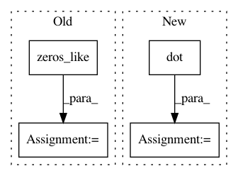

e8cfb65e94f53f34662a1d2c2bb25f7e80b6d3c7,polylearn/tests/test_cd_linear.py,,check_cd_linear_clf,#Any#,40
Before Change
def check_cd_linear_clf(loss):
alpha = 1e-3
w = np.zeros_like(w_true)
y_pred = np.zeros(X.shape[0])
y_bin = np.sign(y)
for _ in range(n_iter):
After Change
y_bin = np.sign(y)
w = _fit_linear(X, y_bin, alpha, n_iter, loss)
y_pred = np.dot(X, w)
accuracy = np.mean(np.sign(y_pred) == y_bin)
assert_greater_equal(accuracy, 0.97,
msg="classification loss {}".format(loss))
In pattern: SUPERPATTERN
Frequency: 3
Non-data size: 4
Instances
Project Name: scikit-learn-contrib/polylearn
Commit Name: e8cfb65e94f53f34662a1d2c2bb25f7e80b6d3c7
Time: 2016-08-13
Author: vlad@vene.ro
File Name: polylearn/tests/test_cd_linear.py
Class Name:
Method Name: check_cd_linear_clf
Project Name: drckf/paysage
Commit Name: 41bd741fef07076d854bb164b5df764e9fcc6a2a
Time: 2017-04-17
Author: geminatea@gmail.com
File Name: paysage/models/tap_machine.py
Class Name: TAP_rbm
Method Name: gradient
Project Name: SeanNaren/deepspeech.pytorch
Commit Name: e30b50ff849a417b8e70d121edd2e85f0565eee1
Time: 2017-09-13
Author: jinserk.baik@gmail.com
File Name: data/data_loader.py
Class Name: NoiseInjection
Method Name: inject_noise_sample